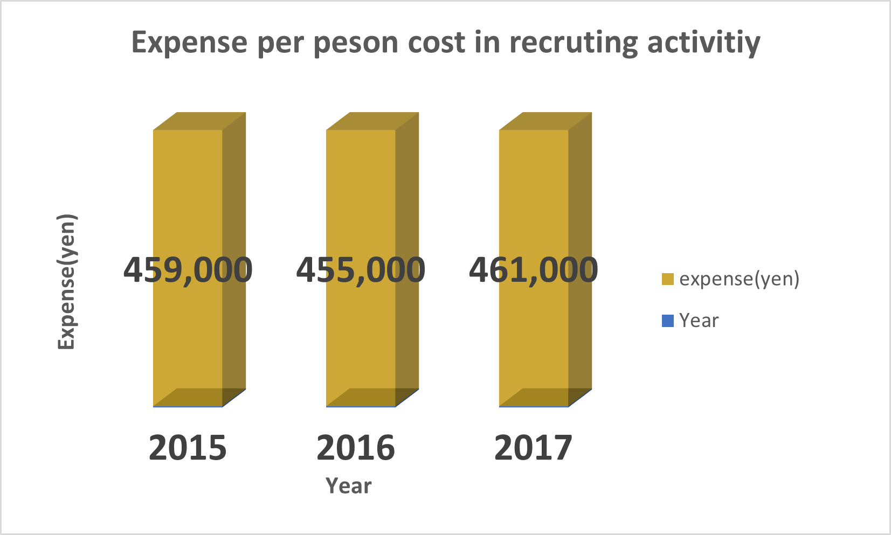

This web page is made for my final project in Going Beyond Text-Based Academic Discourse.
To use some multimedia, i make this web page and attached my graphs and video.
This graph indicates the relation between the expense per person cosst in Japan and year.
This video is example. This video is from Youtube. This video is spoken in Japanese, but i attached subtitles in English.